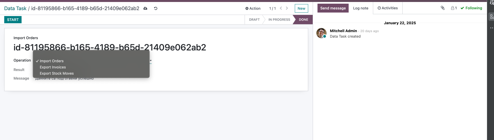
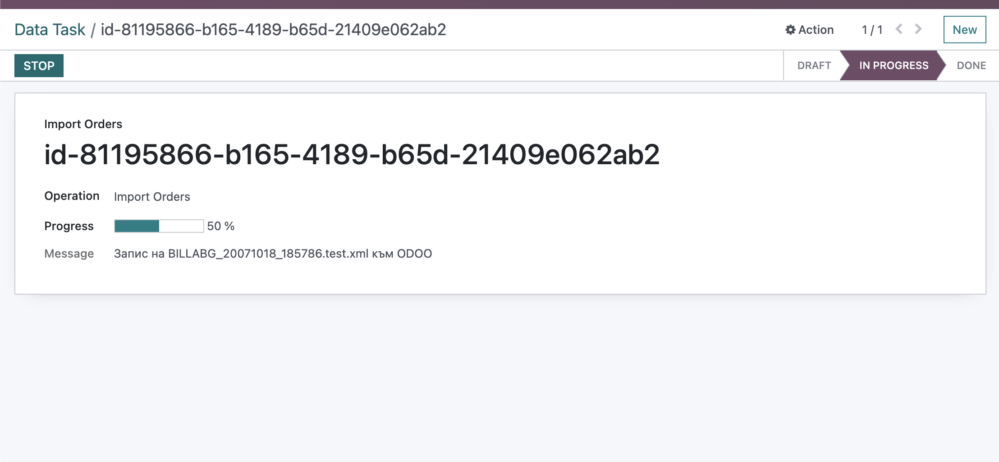

Comarch Exchange is a module that allows you to synchronize data between Odoo and Comarch EDI.
The module allows you to synchronize data such as orders, stock move, and invoices.
The module is designed to work with the Comarch Exchange.
The synchronization is working as follows:
The orders are imported from Comarch Exchange to Odoo.
The stock moves are exported from Odoo to Comarch Exchange.
The invoices are exported from Odoo to Comarch Exchange.

The module allows you to create tasks that will be synchronized with Comarch Exchange. The tasks do the synchronization with Comarch Exchange.
